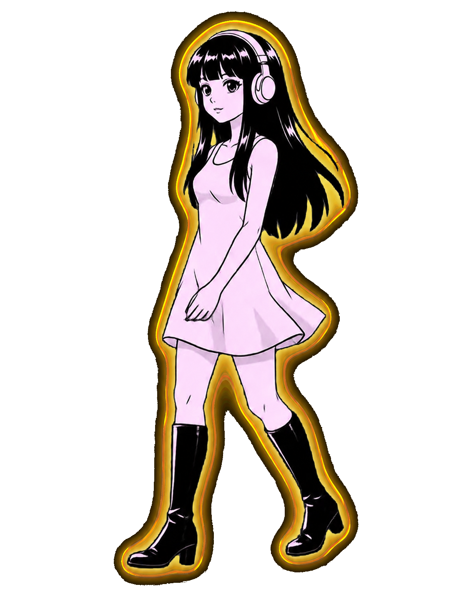

X Radar
Tweet & opportunity detection
Spots high-momentum threads and hooks worth a reply or a quote.
“React Doctor — strong angle: AI codebase audit gate.”
tiny desktop agents · macOS
Chatbots stay in tabs. Hermini lives on your desktop — a tiny agent that walks your Dock and surfaces the signals that actually matter.
chatbot sekmende durur, ajan masaüstünde yaşar.

X Radar AI Radar Pashapedia
Chatbots live in tabs.
Agents live on your desktop.
No window to manage, no tab to lose. Hermini paces the bar above your Dock and taps you on the shoulder only when there's something worth seeing.
Hermini reads your local Hermes cron output and only speaks up when a lane lights up. Real signal. No notification spam.
Spots high-momentum threads and hooks worth a reply or a quote.
“React Doctor — strong angle: AI codebase audit gate.”
Surfaces noteworthy releases, agent workflows and infra shifts.
“Agent workflow signal in the late scan.”
Watches your wiki & lint — flags drift, keeps notes clean.
“Counter drift corrected · lint clean.”
Keeps an eye on schedulers, auth and syncs — quiet until it isn't.
“Sync complete · 3,869 repos healthy.”
Scans local Hermes cron output on your machine — nothing leaves your desktop.
A tiny companion paces the bar, calm when quiet, lively when something lands.
Tap her and a glass panel opens with the signal, the source, and the angle.
Early access is rolling out for macOS. Leave your email — Hermini will wave when it's ready.
No spam. One wave when it ships.